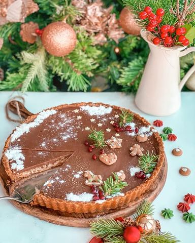

Moja beleška
SačuvanoOvaj tart sam sanjala. Zaista 😅🤗🙈 Neka noć sa malo sna, vrtim se i kako i u toku dana imam hiljadu i jednu zamisao oko uklapanja materijala, spajanja nekih novih ukusa, dekoracije, tako je i ovaj tart ušetao u moj san. 🥰 Booože ☺️ Sanjam ja kako topim karamele u kondezovanom mleku i kako izlivam tu smesu u kalup za tart. Ma san mi se razmirisao. 🤤 I ne da mi djavo mira, moram ja da isprobam! I ljuuudi moji 🥰🥰🥰🥰🥰 Ovaj tart miriše na praznike, na cimet, na karamele, čokoladu, na dom. Na ušuškano, na prijatelje, na slatke zalogaje, na smeh. Na lepo! A lepo delim sa vama ❤️
Sastojci
- Za podlogu je potrebno
- Fil
- Još
Priprema
Za podlogu sam pomešala sve sastojke i u kalup za tart dimenzija 28cm sam utisnula smesu po dnu i ivicama. Ovo sam potom stavila u frižider na hladjenje. Konzervu zasladjenog kondezovanog mleka od 300 ml sam podelila na dva dela, u prvom sam sa kockicom putera topila karamele, u drugom omiljenu mlečnu čokoladu. Kockicu putera i kondezovano mleko sam pustila da proključaju, sve vreme mešajući spatulom, sklonila sam serpicu sa šporeta i dodala karamele pa sam mešala i po malo vraćala na toplu ringlu dok se nisu potpuno otopile. Preko podloge sam izlila ovaj fil, pa sam posula seckani pečeni lešnik po celoj površini i utisnula malo dlanom. Vratila sam kalup u frižider pa sam onda napravila fil od čokolade po istom principu kao i fil od karamela. Preko lešnika prelila sam ovaj fil, odmah vreo sa ringle jer njegova stuktura je poput tečne karamele, pa sam ga lagano rasporedila i spatulom zagladila. Onda sam se malo poigrala dekoracijom. Jedva čekam vaše utiske 🥰🥰🥰
Originalni opis sa Instagrama
💫 Čoko karamel tart 💫 Ovaj tart sam sanjala. Zaista 😅🤗🙈 Neka noć sa malo sna, vrtim se i kako i u toku dana imam hiljadu i jednu zamisao oko uklapanja materijala, spajanja nekih novih ukusa, dekoracije, tako je i ovaj tart ušetao u moj san. 🥰 Booože ☺️ Sanjam ja kako topim karamele u kondezovanom mleku i kako izlivam tu smesu u kalup za tart. Ma san mi se razmirisao. 🤤 I ne da mi djavo mira, moram ja da isprobam! I ljuuudi moji 🥰🥰🥰🥰🥰 Ovaj tart miriše na praznike, na cimet, na karamele, čokoladu, na dom. Na ušuškano, na prijatelje, na slatke zalogaje, na smeh. Na lepo! A lepo delim sa vama ❤️ Za podlogu je potrebno: •300 gr mlevenog spekulas keksa •50 gr mlevene plazme •125 gr istopljenog putera •50 ml mleka Fil: •300 ml zasladjenog kondezovanog mleka •40 gr putera x 2 •200 gr lešnik karamela •200 gr mlečne čokolade Još: •100 gr sitno seckanog pečenog lešnika Za podlogu sam pomešala sve sastojke i u kalup za tart dimenzija 28cm sam utisnula smesu po dnu i ivicama. Ovo sam potom stavila u frižider na hladjenje. Konzervu zasladjenog kondezovanog mleka od 300 ml sam podelila na dva dela, u prvom sam sa kockicom putera topila karamele, u drugom omiljenu mlečnu čokoladu. Kockicu putera i kondezovano mleko sam pustila da proključaju, sve vreme mešajući spatulom, sklonila sam serpicu sa šporeta i dodala karamele pa sam mešala i po malo vraćala na toplu ringlu dok se nisu potpuno otopile. Preko podloge sam izlila ovaj fil, pa sam posula seckani pečeni lešnik po celoj površini i utisnula malo dlanom. Vratila sam kalup u frižider pa sam onda napravila fil od čokolade po istom principu kao i fil od karamela. Preko lešnika prelila sam ovaj fil, odmah vreo sa ringle jer njegova stuktura je poput tečne karamele, pa sam ga lagano rasporedila i spatulom zagladila. Onda sam se malo poigrala dekoracijom. Jedva čekam vaše utiske 🥰🥰🥰 • • • #tart #cokotart #cokoladnitart #karamele #novogodisnjadekoracija #praznicinamstizu #srecucinemalestvari #dezert #idejezadezert #slatkisi #domacaposlastica #sljubavljuspremljeno #joyofbaking #cheistmasdecorations #foodphotographylover